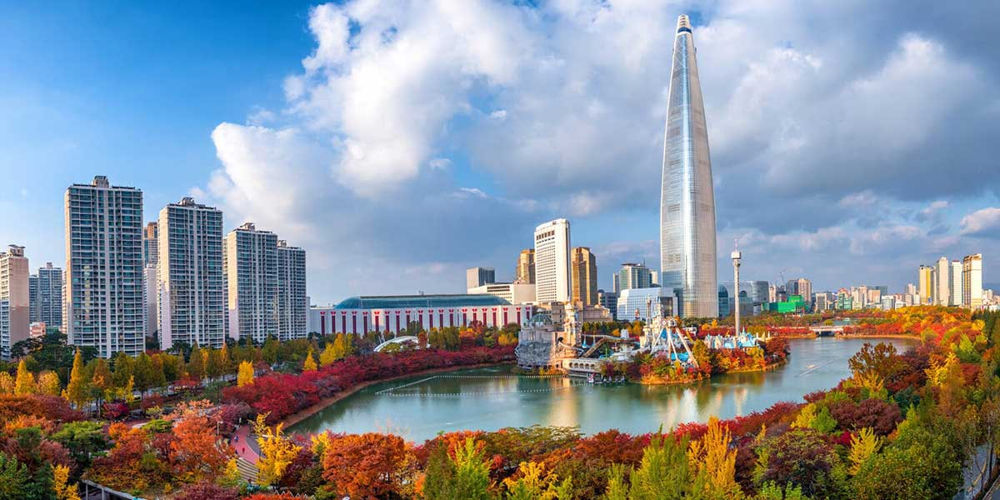
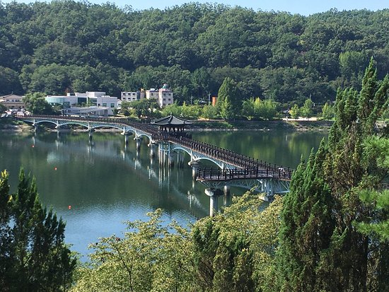
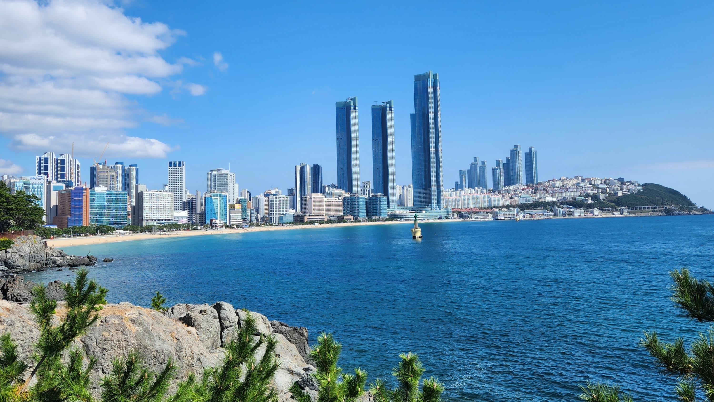

Lugares para visitar:
- Seúl
- Gyeongju
- Andong
- Busan
Itinerario:
En 5 dias y 4 noches en seúl se puede realizar una visista a la aldea Bukchon Hanok, ir a Changdeokgung, el distrito Myeongdong, visistar la torre N Seoul, ir a Gyeongbokgung, visistar el museo nacional de corea e ir a la sede principal de samsung en suwon.
Costos de viaje:
- Hotel estadia completa -> $400
- Comidas externas por dia -> $40
- Traslados por dia -> $7
- Ingresos y actividades -> $70
- Costos adicionales -> $50